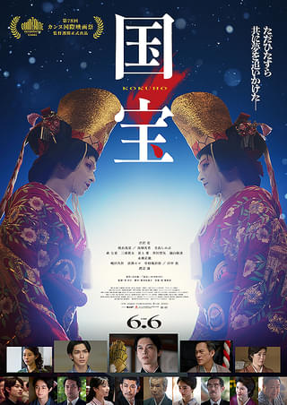
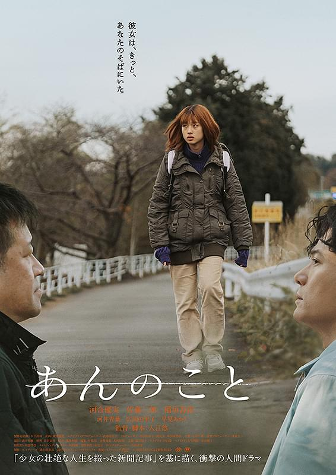
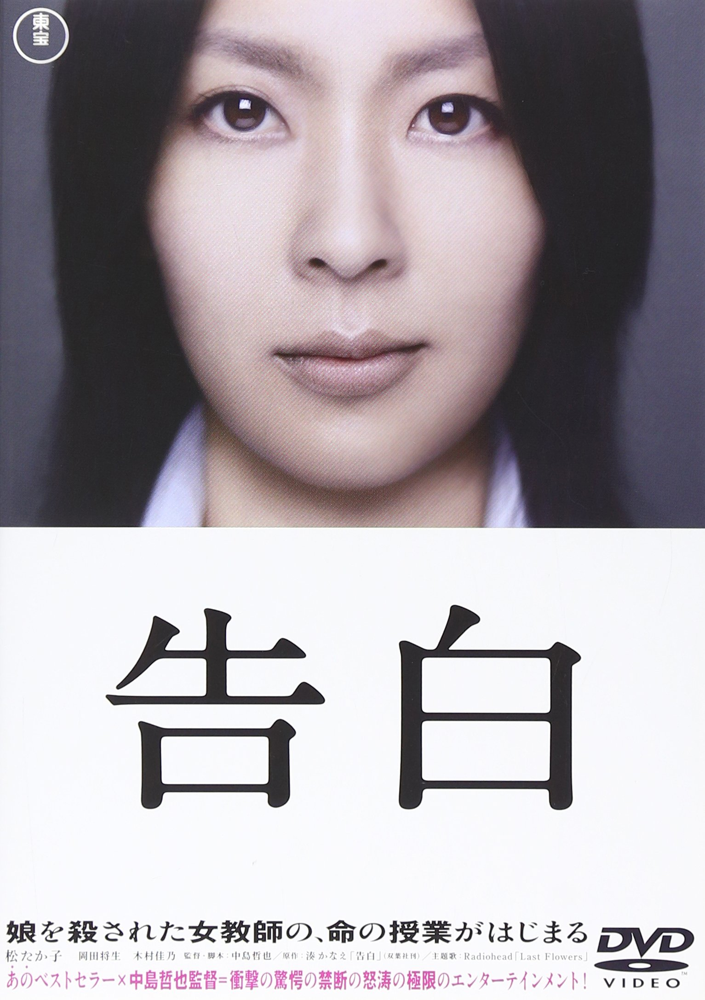

自己紹介
名前： 吉田 妃愛
誕生日：2007/05/06
MBTI: ENTP(討論者)
◇◆◇
人と話すことは好きですが、会話のテンポが速いので話題がポンポン変わります。
ド文系なのに理系寄りの学校に来て泣いています。まだ暗記が多くて追いつけている、と思ってますが、座学が終わったらかなり詰みそうだなあ。と思いながら最近は生きています。
３年間のうちにものに出来るように頑張りたい。。。
出身校は翔洋学園高等学校という通信制の学校から来ました。
３年間バイト尽くしだったので、話しかけ方を忘れているので話しかけてきてくれると喜びます。
ゲームが好きです。
趣味
自己紹介でも少し書きましたが非常に多趣味な人間です。
全部書くと提出期限に間に合わなくなるので、何個かだけ厳選してみました。
趣味が合うかも！って思ったら話しかけに来てくれると嬉しいです♪♬
◇推し◇

ご飯食べる系がほんとにおいしそうに毎回毎回食べてくれる。
バーガー系の評価がリアルで大好きです。
顔がいいのにやってることがかなり狂人で
笑える動画が多めです。
声がかわいい、歌がかわいい、仕草もかわいい。
Vtuverに本ハマりするきっかけになった子です。
麻雀、LOL、ポケモン、遊戯王などの配信が多めで
見た目に反してかなりセレクトが渋い印象。
きゅうくらりんがお気に入りで、多分誇張抜きで1週間で100回くらいは聞きました。
apexでウィングマンに憧れた方は知っていると思います。
CRに所属していて、最初は立ち絵が可愛くて見始めました。
プレイスタイルは可愛くなかったです。
声がかわいい寄りで、ゲームが基本何やらせても上手、日本語を勉強してほぼ完璧にマスターする努力家な人間性に惚れてずっと推してます。
正直eスポーツ系は文章だと凄さが伝わらないので、見てくださいに限ります。
ホラゲーのビビり方が過剰で面白いです。
マイクラが主で、「ib」や「ママに会いたい」などのフリゲなどもあります。
個人的にはデトロイトが一番好きです。
◇好きな映画◇

主演が吉沢亮、助演が横浜流星という豪華な俳優に加え、脚本家が「サマーウォーズ」「魔女の宅急便」で有名な奥寺佐渡子という方で、歌舞伎の世界に魅入られた元ヤクザの息子が国宝になるまでの人生を描いた作品です。
三時間というかなり長い映画ですが、見ていて全く飽きない作品です。歌舞伎という世界においての「血」の重要性や、主人公の復讐から始まる歌舞伎への執着が生々しく書かれている、むしろこれが三時間で済んだのか、と思えるほど深い作品です。

家庭環境に恵まれず、未成年の内から売春や薬物に手を染めてしまった女性の、壮絶な人生が描かれた作品です。
母親は娘の杏に金銭的にも精神的にも依存しており、売春の強要、それで稼いだ金銭の搾取、祖母の介護など、全てを杏に依存しています。そんなうちある日彼女は薬物使用の容疑で捕まり、多々羅という刑事に出会い多々羅の手助けもあり、薬物を断ち、介護施設で働くようになるのですが、母親の支配と様々な不幸が重なり、挙句コロナ化により人との交流さえ立たれてしまい…という一人の悲しい女性のお話です。
そしてこのお話の最大の特徴が「本当に起こってしまっていた」ということです。杏は実在しており、多少監督、脚本家によって考察が足されているものの、このお話は実話に基づいたものであり、映画や小説で知ることができる、ひとりの人生なのです。

小説にはまったきっかけの映画です。湊かなえが原作の映画で、松たか子の不気味な演技と、生徒の欲望を描いた作品で、ネタバレしない範囲で説明すると娘を殺された母親の復讐のお話です。
正直初めて見たときは「作者は人間が嫌いなんじゃないか」と思うほどに苦しかった記憶があります。母親が子供を思う気持ちというのが裏テーマなのかもしれませんが、登場する母親全てが不憫です。そこに中学生という多感な時期の子供たちの間で起こる事件がかなりリアルで、見た当時は中学生だったこともあり、かなり衝撃を受けました。